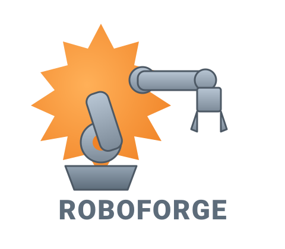

About RoboForge
A browser-native robotics playground.

RoboForge is a web-based robotics simulator focused on accessibility and ease of use. Since most of the complexity of robotics software lies in the setup and configuration, RoboForge takes a different approach: it runs entirely in the browser, with no installations or dependencies required. the current simulations available are the arm and quadcopter simulations. the DOSE tab is currently under development but if you guess the password, feel free to use it.
Built by Rishik Saravanan. RoboForge is a personal project to make robotics simulation approachable: no installs, no SITL toolchains, no ROS setup. Open the page, and do whatever.
Mission exports target DroneKit-Python. Run the generated script against an ArduPilot SITL instance for safe testing, or against a real vehicle once you've validated the trajectory in simulation.
Discord: anti.suction
Email: contact.roboforge@gmail.com